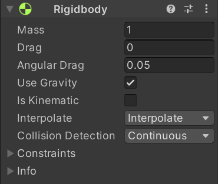
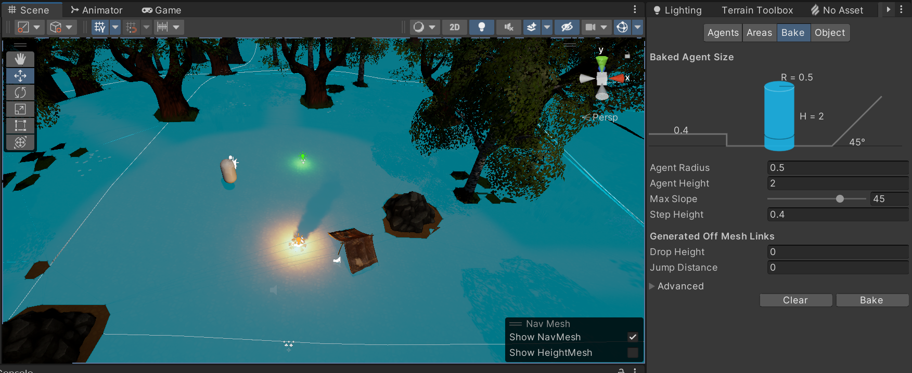
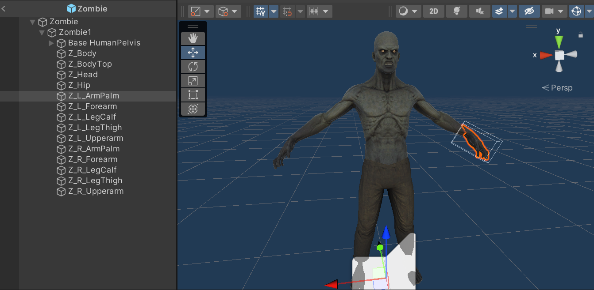
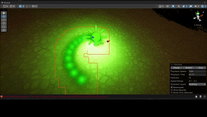
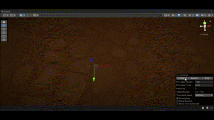
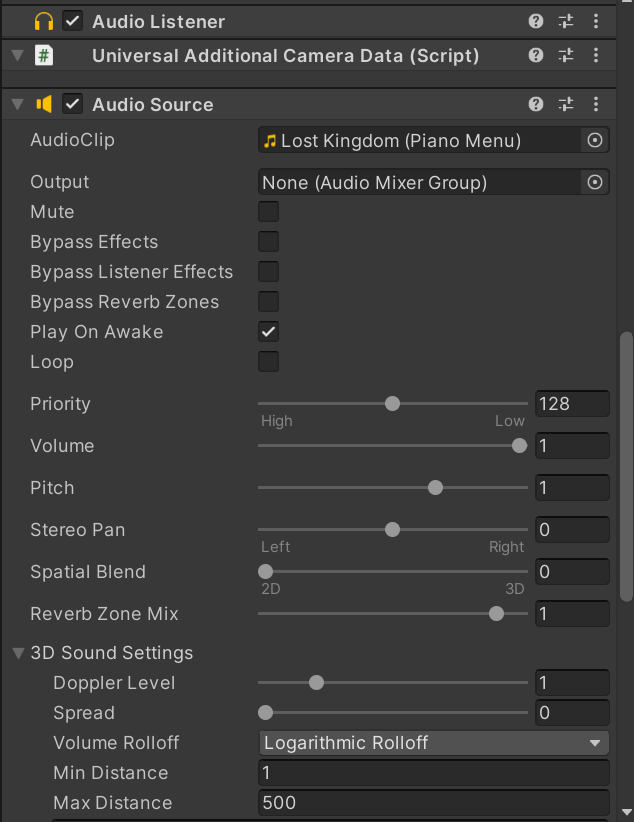
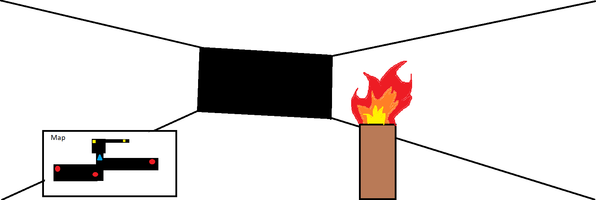
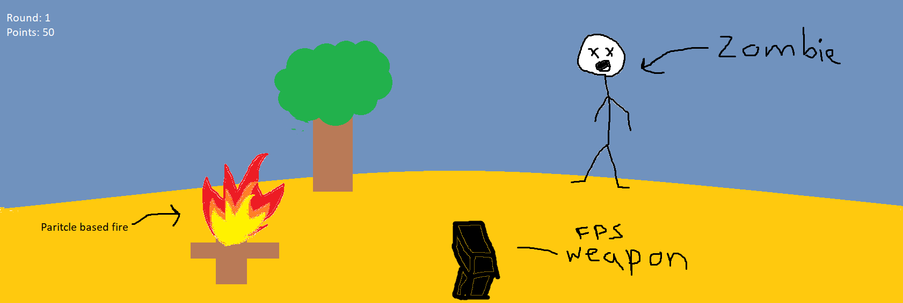

Hello! My name is Nate Meshesha, and this is my final project for CSCI 5611: Animation and Planning in Games. For my final project, I have created a Zombie-themed game in Unity that demonstrates multiple topics discussed throughout class. This game is heavily based on the popular zombies mode in the Call of Duty series of games. It is a first-person shooter where the goal is to survive multiple rounds where waves of zombies are attempting to kill the player in a forest-themed nighttime environment. The player must kill all zombies to advance to the next round, and with each round, more and more zombies are spawned. As we were allowed to use third-party libraries and tools, I made heavy use of Unity's built-in tools and ecosystem to achieve my final results.
Disclaimer for grading purposes: I am a grad student and chose to work alone for the final project.
Many of the algorithms and approaches that were discussed in class were also used in my game. I was able to utilize Unity's built-in tools, asset store, and my own C# scripts to incorporate many of these algorithms and approaches within the game.

By creating my game in unity I was able to make use of Unity's built-in 3D physics engine to add rigid bodies to my scene. In unity, you can add components to game objects, and these components act as scripts that are associated with the game object. One of the built-in components in Unity is the Rigid Body component which allows a game object to be affected by gravity and other forces in the scene. I was able to add a rigid body to both my player and the zombies so they could be affected by gravity. Additionally, I use forces to create player movement. If the w, a, s, or d keys are pressed then a small force is applied to move the player in a specific direction. Also, if the space key is pressed, a small force is applied under the player's rigid body to cause the player to jump. There are some minor forces added to create drag when the player's moving to make the controls feel a bit tighter as well.

After creating the terrain using Unity's built in terrain generation tools, I needed a way for the agents to navigate through the environment and plan their path. Luckily Unity has built-in functionality for NavMeshes, so I was able to bake in a NavMesh for my terrain. A NavMesh defines what is walkable terrain for the agents. During the navigation of the agent, Unity internally uses the A* algorithm to plan a path using the baked NavMesh. This is documented in the official Unity Manual https://docs.unity3d.com/Manual/nav-InnerWorkings.html.
Each zombie has a NavMeshAgent component attached to it, and this allows it to be able to plan a path toward a destination. Through a C# script, I was able to set the destination of each agent to the player's current position. Although this method works, it isn't perfect. The zombies sometimes get stuck behind obstacles, and they are unable to move around to get to the player. As A* is suppose to be optimal, I'm not quite sure why this occurred, and I was unable to fix the issue. Within the context of the world, this doesn't completely break immersion. It can be explained as zombies are meant to be unintelligent and therefore, they don't have the best navigational abilities.
 All the zombies in the game are using the same zombie model that I obtained from the Unity asset store. The model is both rigged and skinned, and the original artist was able to provide animations for the model. I was able to use Unity's built-in animation system to play idle, walk, and run animations based on the zombie's speed. Also, when within a certain distance of the player, I was able to play the zombie's attack animation when damaging the player's health. Upon death, currently, the zombie's game objects are just destroyed, but I had attempted to try different approaches to give the zombie a death animation. The model came with a falling back and falling forward animation, and I tried to use these as the death animation. I had to discard this idea as both animations didn't look the best during playtesting. The next approach I tried to take was having the zombies ragdoll when their health was zero. Unfortunately, I was having issues with Unity's built-in ragdoll wizard, and I was unable to get this working as well.
I was able to use particle systems to implement effects for the zombie spawners, bullet impacts, and campfire in my game. Unity has two types of particle systems: the standard/legacy particle system and the VFX graph. The standard/legacy particle system is a bit easier to use, but it doesn't allow for as many complex effects as the VFX graph does.

I was able to create the effects for the game objects representing zombie spawners using the standard particle system. They have a point light underneath, and particles are spawned in a circle and have a small upward velocity over their lifetime.

I was able to create bullet impact effects using the legacy particle system as well. When the shooting raycast hits a surface, an effect is created in which several particle trails are spawned and launched in an upward direction.

Within the last few years, Unity introduced a new render pipeline called the Universal Render Pipeline which allows for more complex effects during rendering. As part of this new render pipeline, various built-in tools were introduced such as VFX graph. VFX graph is a tool that allows for the creation of complex particle systems, and I was able to utilize it to create the campfire effect in my game. Each particle uses a texture from a flip book texture containing all the frames of animation for a smoke animation. Over the lifetime of a particle, it increases in size and flips through the smoke animation. By also including a point light representing the fire and using a billboard effect to rotate the particles toward the camera, it creates a somewhat realistic-looking campfire effect.

I used the built-in audio tools in Unity to add music and sound effects to my game. Given how late in development audio was added, I was unable to fully explore much of the audio related capabilities that Unity has to offer. From what I was able to explore unity automatically adds a audio listener component to the main camera of each scene. All audio that gets played is in relation to this audio listener's 3D position. Additionally, an audio source component can be added to game objects in the scene that will play audio. This audio is played from the 3D position of the audio source. I didn't get to fully explore the full functionality of the audio source component, but it allows for the incorporation of various concepts that were discussed in class such as echo, reverb, and the doppler effect. In my game, I play audio clips for the walk/run of a player/zombie, shooting/reloading of weapons, and attack of player by zombie. Also, I play the sound of crows to indicate the start of a new level. Music was added to both the main menu and the core game to give the game more polish as well.
Since more zombies are spawned each subsequent round, at high rounds there are a large number of zombie game objects at a time. This is essentially the main bottleneck of the game. Not only can this cause issues with rendering all the zombies in view, but for each zombie, physics and navigation calculations are being made. Each zombie has a rigid body, and each zombie is a NavMesh agent. Additionally, the map I created for my game was relatively small and simple, but a bigger map with more obstacles would require additional methods for better performance. One other possible area that was computationally expensive was particle systems. Specifically, spawning particles for every bullet impact is expensive, so weapons with faster fire rate may cause a slowdown.

Initially, I wanted to create a cave/dungeon exploration game from a first-person perspective. The main features would be procedural generation along with a torch using real-time fire simulation. The goal would be to collect items while avoiding enemies that followed and tried to attack you as you explored the cave system. At the time, I wasn't sure what type of enemies to create, but I knew I wanted the game to be horror themed. From the sketch above, you can see the torch being held by the player in first person, and a mini-map displaying the player’s current position. In the minimap, the red circles would've indicated enemies, while the yellow dots would've indicated collectible items.

After doing more research on fire simulations, I realized that having real-time fire in my game would be too challenging for me to implement given the time limitations for the project. Also, since I had never taken multi-variable calculus, and we didn't cover fire simulations until later in class, I was a bit intimidated by the math involved. Therefore, I decided to take a particle system-based approach, and fake the look of fire. Since the fire would now be fake, I thought it would be more convincing if it was stationary, so I came up with the idea of a campfire scene instead of a cave/dungeon. For the enemies, I came up with the idea of using zombies, so I decided to create my game in the style of a call of duty clone.
As you can see from the sketch above, the torch has been replaced by an fps weapon similar to call of duty zombies, and a zombie can be seen in the environment trying to follow and attack the player. Also, there is some text on the top left of the image indicating the current round and the number of points the player has accumulated. Lastly, the environment contains the particle-based campfire.
The final results ended up looking very similar to the updated sketch. I was surprised by the direction my project took from my original sketch in that I didn't have a clear goal or objective for my game at first. I had severely underestimated the difficulty of real-time fire simulation. Although I didn't get to implement procedural cave/dungeon generation as I had originally wanted, making the environment more open allowed me to better replicate the experience of call of duty zombies.
The feedback I got from my peers was helpful, and they seemed to really like the project. The common theme from all the feedback was just that the game could use a bit more polish. There isn't any death animation for the zombies, so adding that in would be nice. Also, there isn't a screen for when the player dies, so this was another area in which the game could be improved. Additionally, I got a few suggestions to make the game more engaging such as adding a way for the player to lose and gain ammo instead of the current infinite ammo implementation. Also, allowing the player to distract the zombie somehow was another suggestion I got. Unfortunately, given the remaining time left in the project, I was unable to incorporate these ideas and feedback into the final project.
There are significant improvements being made in the field of navigation and motion planning. In class, we talked about several different approaches such as probabilistic road maps (PRMs), rapidly-exploring random trees (RRTs), or visibility graphs. Unity's use of navigation meshes works well, but there may be better methods than the underlying A* implementation. One of the related works papers that I cited for my initial project proposal was a variation on RRTs called the ST-RRT (https://arxiv.org/abs/2203.02176). This paper presents a new novel method for path planning with dynamic obstacles, velocity constraints, and unknown arrival times. This type of approach that considers time would give the zombies more realistic and efficient planning abilities. Additionally, in class, we talked about reinforcement-learning based approaches to navigation. This alternative paradigm could be explored instead as reinforcement learning, and machine learning in general, is a booming field of research.
My campfire was created using particle system effects, but I would need to implement a better method of emulating fire for more accurate results. There is a lot of state of art research being done with regard to highly accurate and efficient fire simulations. The third paper from my initial final project related works list was a method used for highly accurate physics-based combustion systems (https://dl-acm-org.ezp2.lib.umn.edu/doi/full/10.1145/3526213?casa_token=BLqTCtXAKu0AAAAA%3AUitXjV41bB1t39NhJkQcUuJH0T0nEcSn-HC1u5QMDKYjdmJg2FeSVBqbc7_eCDwQ8jTxL7XrOeeP). Within the paper, the authors discuss the use of several different mathematical models to represent the properties of real-world thermodynamics. The results of the research looked really nice, but would most likely be unable to be incorporated within my game as they are too slow for real-time.
The first paper I listed in my original related works was a solution for real-time fire simulations and the one that I focused on the most during my initial ideation phase (https://dl.acm.org/doi/abs/10.1145/3528233.3530737). In this paper, the researchers were able to use a Poisson filter-based approach in their solver while using implicit integration. The results were extremely nice visually and efficient, but unfortunately given time restrictions and my lack of experience with this area of math, I did not implement this for my game.
There are many different possible areas for future work that the project could be improved on with. Many of these relate to the addition of gameplay elements to make the game more enjoyable. Currently, there isn't any death animation that plays when a zombie is killed by the player. Adding this in would help with immersion within the game. Also, currently, the player has infinite ammo, but having the zombies randomly drop items upon death like an item to give the player the maximum amount of ammo their weapon can hold would help make the game more challenging. This would also be more aligned with how the actual Call of Duty Zombies behaves. Creating a points system for the game similar to the one found in Call of Duty Zombies would give the game more depth as well.
In terms of variation, I think adding more environments and different types of enemies would be greatly beneficial. Currently, Unity's navigation system works well, but exploring other algorithms/approaches to navigation may be beneficial for the different enemies. One such approach could be a reinforcement learning-based approach.
Lastly, the game overall could use a bit more polish. I could use better assets than the free ones taken from the asset store, and incorporate those nicer assets within the game.
A full list of credits is listed below, but can also be found in credit.txt in the root directory of the project. All video tutorials used are listed, along with the link to all assets used in the project. All assets were free and downloaded from the Unity Asset Store.
Tutorials:
Assets: